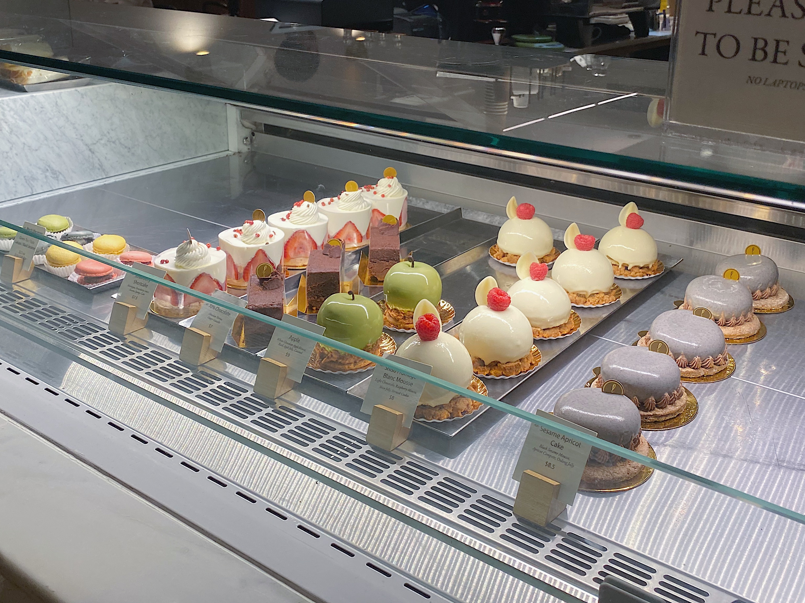
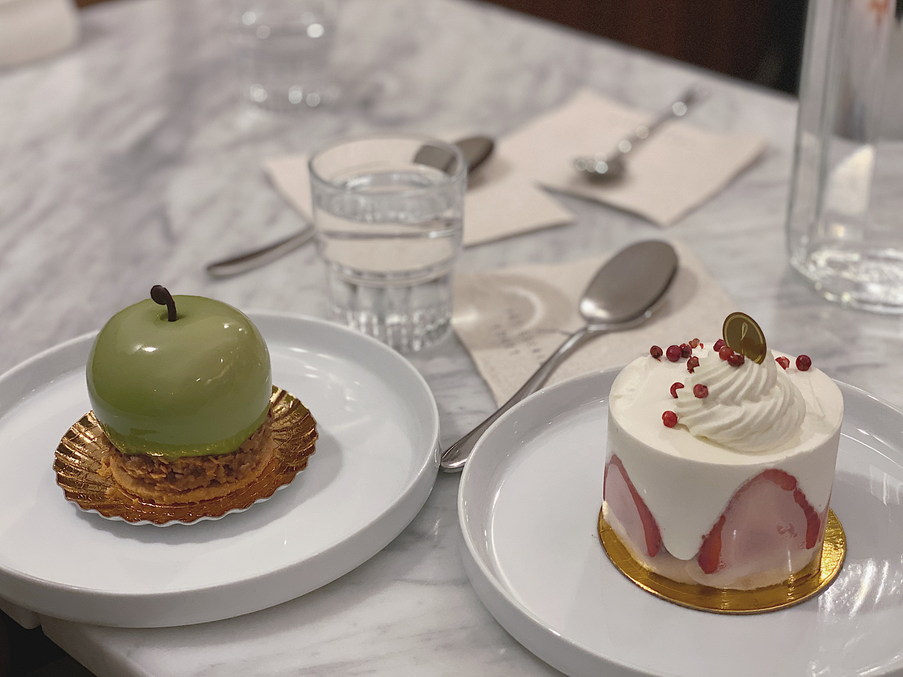

Description: Japanese dishes & sushi with a twist are featured at this cozy eatery with minimalist decor.
Address: 109 1st Avenue, New York, NY 10003
Tel: (212)-995-5278
Working Hours: Sunday-Thursday 5pm-10pm Friday, Saturday 5pm-11pm
Description: An extensive tea list & unique sweets & snacks are served a la carte or in formal tea ceremonies.
Address: 230 E 9th St Floor 2, New York, NY 10003
Tel: (212)-228-8030
Working Hours: Sunday-Thursday Noon-10:15pm Friday, Saturday Noon-11;15pm
(Photos credit: Hana Bao/ July 1, 2019)
Recommended Menus:
1. Treasure Box
2. Grilled eel over rice
3. Matcha Sundae★
#3 Patisseries Fouet ★ ★


Description: Asian fusion dessert
Address: 15 E 13th St, New York, NY10003
Tel: (212)-620-0622
Working Hours: Closed on Monday Sunday, Tuesday 10am-9pm Wednesday-Saturday 10am-10pm
(Photos credit: Hana Bao/ October 26, 2019)
Recommended Menus:
1. Green basil Apple
2. Strawberry shortcake★
#4 Xu's Public House ★ ★ ★ ★ ★ ★
Description: Meticulously plated Asian fusin plates are served in a sleek setting with a glass ceiling.
Address: 15 Union Square W, New York, NY 10003
Tel: (315)-968-5030
Working Hours: Closed on Monday, Tuesday-Sunday 11am-10pm
(Photos credit: Hana Bao/ November 23, 2019)